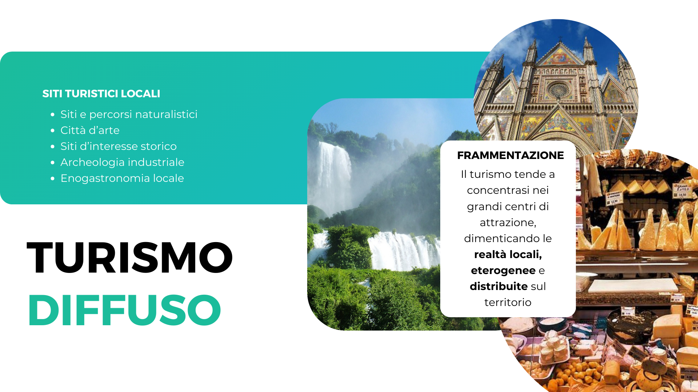
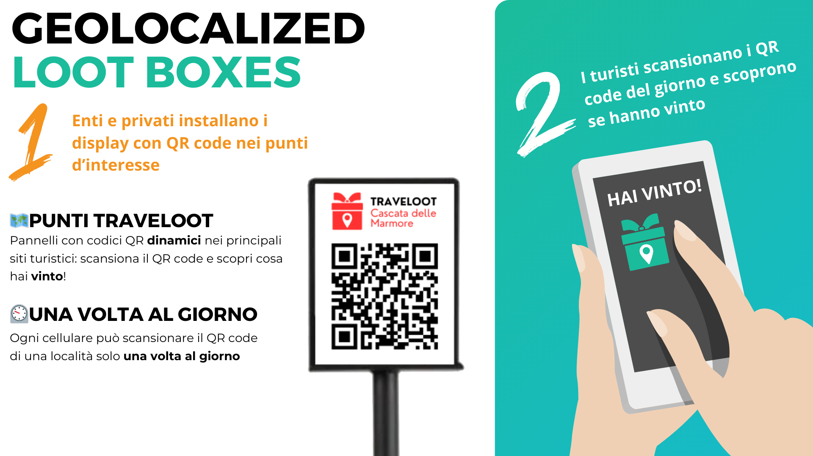
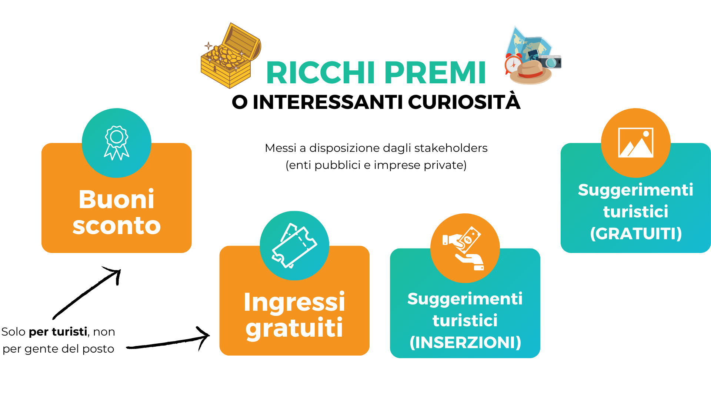
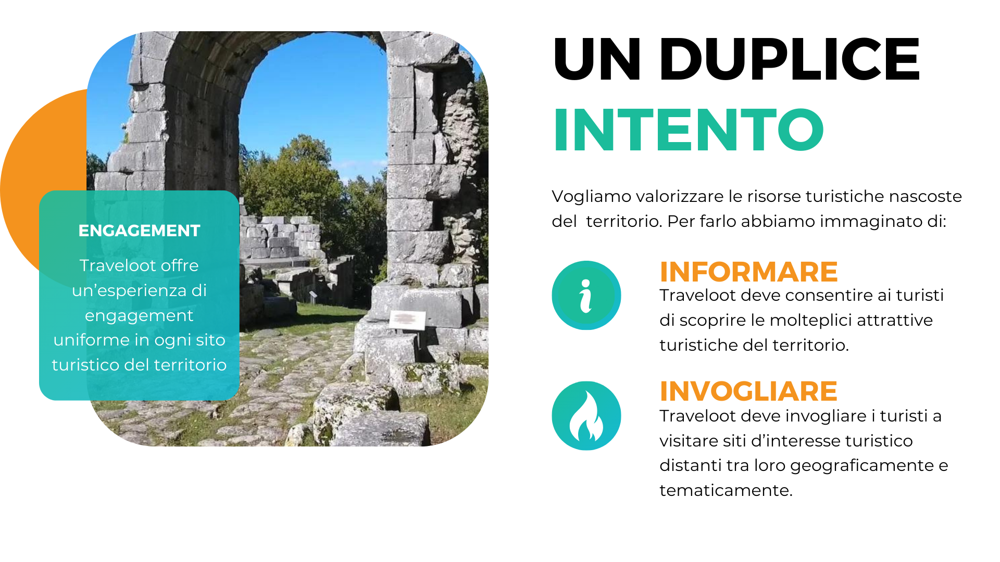
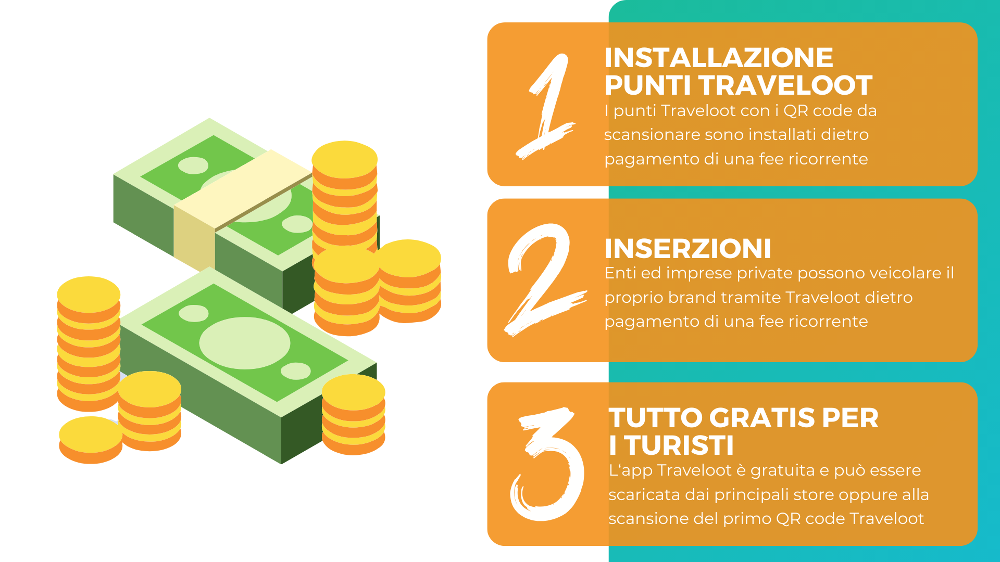
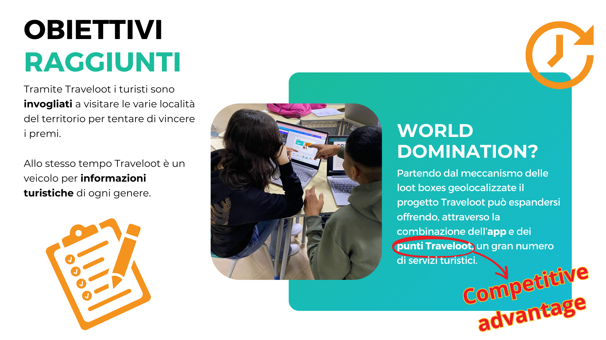

L'Italia è un paese dalle potenzialità turistiche enormi ma frammentate: i turisti preferiscono visitare i grandi centri famosi piuttosto che scoprire le innumerevoli bellezze nascoste in tutto il territorio.
Traveloot è un sistema di "Loot boxes geolocalizzate": enti o privati possono installare i nostri display con QR code nei punti d’interesse turistico mentre i turisti possono scansionare i QR code del giorno per scoprire se hanno vinto!
Tra i premi che è possibile trovare nelle "loot boxes" ci sono buoni sconto, ingressi gratuiti o premi di consolazione (informazioni turistiche o commerciali).
I premi sono messi a disposizione dagli stakeholders: enti pubblici e imprese private della filiera turistica.
Traveloot mira ad informare i turisti circa l'esistenza di siti particolarmente interessanti, anche se poco noti, ed allo stesso tempo è un incentivo a visitare queste realtà.
Il revenue model di Traveloot si basa su fee ricorrenti per l'installazione e la manutenzione dei punti Traveloot e per le inserzioni. I turisti ovviamente non pagano nulla: scaricare ed usare l'app Traveloot deve essere quanto più frictionless possibile.
Traveloot è solo agli inizi! L'installazione dei punti Traveloot ci garantirà un posizionamento invidiabile per fornire ulteriori servizi nella filiera del turismo.
